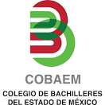

Bienvenido al Colegio de Bachilleres del Estado de Mexico
(COBAEM 25 TULTITLAN)
somos una institucion comprometida con la educacion

Misión, visión y objetivo
Misión
Impartir estudios de Bachillerato General a través de un marco curricular común, basado en el desarrollo de competencias que formen de manera integral jóvenes responsables, solidarios y comprometidos, capaces de incorporase a la educación superior y al sector productivo que les permita mejorar su calidad de vida
Visión
Ser una Institución de Educación Media Superior que se distinga a nivel estatal y nacional por su calidad, liderazgo académico y por el desarrollo del perfil de egreso de sus estudiantes, mediante la implementación de programas de mejora continua en un ambiente de responsabilidad y disciplina académica.
Objetivo
Brindar una educación integral y de calidad en la cual se promueva el desarrollo de valores en un ámbito de respeto que contribuya al crecimiento de nuestra entidad.
Compromiso Social
Mejorar la calidad y Equidad de la Educación, así como impulsar la participación de las comunidades comprometidas con el aprendizaje, a partir de la necesidad de ampliar la representatividad de la Educación Media Superior, es como el COBAEM construye, da seguimiento y supervisa las metas establecidas en materia educativa, como Compromiso Social por la Calidad de la Educación. Este compromiso nos convoca a la impartición de estudios de Bachillerato General, formando ciudadanos con conocimientos idóneos, habilidades y valores, para así acceder a la Educación Superior o desempeñar una actividad laboral.
SECRETARÍA DE EDUCACIÓN
SUBSECRETARÍA DE EDUCACIÓN MEDIA SUPERIOR Y SUPERIOR
DIRECCIÓN GENERAL DE EDUCACIÓN MEDIA SUPERIOR
ZONA ESCOLAR:
COBAEM 25 TULTITLAN
Teléfono: